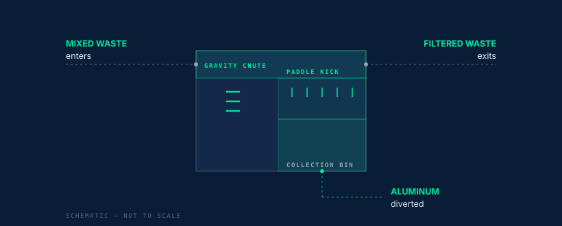

Space.
One unit replaces a sorting table, a staging lane, and the aisle around them. Built for docks that cannot grow.
Waste automation & computer vision
Computer vision identifies recoverable material on a moving stream. A mechanical paddle array kicks it out. Every classification is logged and compiled into compliance-ready reporting before the lights go down.
Identify. Kick. Repeat.
The operator's problem
Back-of-house was sized years ago and it is not growing. Event volume is. The usual answer is more hands, more bins, and a post-event sort that runs past midnight — so diversion becomes a cost centre and the reporting becomes an estimate.
MatterFlow puts the sort at the point of disposal instead, and the report writes itself.
What you get back
One unit replaces a sorting table, a staging lane, and the aisle around them. Built for docks that cannot grow.
Classification runs at line speed. No batching, no post-event sort, no second handling of the same bag.
Manual picking becomes machine picking. Staff move from sorting to supervising.
Identify. Kick. Repeat.
Optical sorters have separated product from debris in agriculture for decades — at speed, in dust, without stopping. That is the lineage. The difference is what we point it at.
Material enters and is presented to the camera on a moving stream.
The actuator array fires on a positive ID and drives the item off the stream.
Recovered material accumulates for pickup. Everything else exits as filtered waste.

Automated reporting
Diversion rate, capture counts, and event windows compile automatically into reporting aligned to California AB 2176 and SB 1383. Signed, retained, and ready when the ordinance asks — not reconstructed from memory a week later.
Who it's for
Fixed footprint, high frequency, hard diversion targets.
Arenas, convention centres, campuses. Same dock, more events.
Temporary siting, extreme volume, no permanent infrastructure.
A short assessment tells you what a unit would recover at your venue, and what it would take off your labour line.
Book an assessmenthello@matterflow-usa.com